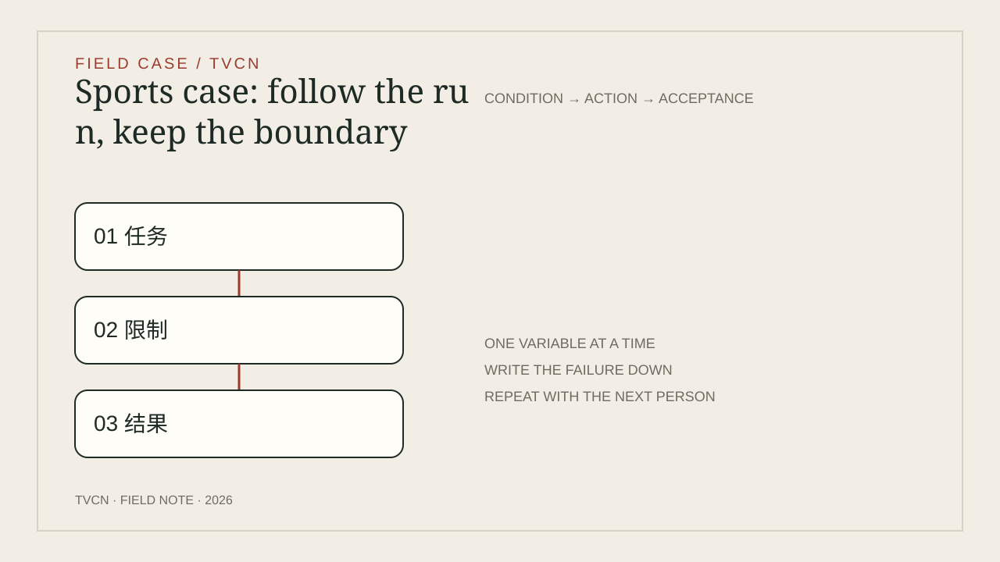

Anonymised composite review: A four-minute trail-running film on an eight-kilometre mountain route; three crew, one stabiliser and one drone. This is not one client's real project; it compresses constraints, decisions and failures that recur across field work into one reusable case.
Case note: an anonymised composite; there are no location photographs. The diagram is structural, not one client record.
| Stage | Question to answer | Failure signal |
|---|---|---|
| Task | Can one selling point be proved on screen? | The point needs voice-over |
| Rehearsal | Can the product action be done right first time? | The actor waits for a cue |
| Shoot | Does each of six shots answer one question? | Shots repeat the same information |
| Review | Which step is irreversible? | Everything is fixed in post |
图解

Task and limits
A composite review of a trail-running shoot: follow, weather and wrap boundaries; safety before the shot.
- Narrow trail; camera cannot run beside the athlete.
- Changeable weather; the drone may be grounded at any time.
- The runner follows a training plan, not the shot.
Schedule
05:30 scout, 06:30 start and warm-up, 07:00 three fixed positions for passes, 08:30 summit, 09:00 descend; no night trail.
The schedule does not fill every hour; it puts the irreversible action where energy and light are most reliable, and leaves pickups only for hooks and continuity.
Budget
Total ¥14,000: labour 6,000, gear 4,000, transport and insurance 3,000, post 1,000.
Protect three things first: the unrepeatable location, sound backup and post retries; gear upgrades come after.
Three decisions
No running beside the athlete; three fixed positions at start, ridge and switchback, one pass each.
Drone only in open sections; ground it above five metres per second; aerial is not the main narrative.
The runner follows the training plan; the crew calls positions 30 seconds ahead by radio, no stopping, no chasing.
Three failures
The first follow run nearly tripped the athlete on a narrow trail; fixed positions replaced it.
Wind delayed the drone return and a ridge section was lost; a ground camera covered it.
The runner slowed for the camera and lost rhythm; the crew stopped asking him to accommodate.
| What went wrong | Fix used |
|---|---|
| The first follow run nearly tripped the athlete on a narrow trail | fixed positions replaced it. |
| Wind delayed the drone return and a ridge section was lost | a ground camera covered it. |
| The runner slowed for the camera and lost rhythm | the crew stopped asking him to accommodate. |
Result
A four-minute film; the runner completed the plan; aerial is only 20 seconds and ground cameras carry the story. Lesson: safety boundaries belong in the plan, not in on-site improvisation.
Reuse list
- Use fixed positions on narrow trails; do not run alongside.
- Check wind before launching the drone.
- Do not ask an athlete to change rhythm for a shot.
- Call positions 30 seconds ahead.
Field breakdown
Picture: Narrow trail; camera cannot run beside the athlete. This decides where the first camera goes, not the other way round. No running beside the athlete; three fixed positions at start, ridge and switchback, one pass each.
Sound: Drone only in open sections; ground it above five metres per second; aerial is not the main narrative. Record one clean pass on location and cut picture to it; do not cover the problem with music later.
Delivery: A four-minute film; the runner completed the plan; aerial is only 20 seconds and ground cameras carry the story. Lesson: safety boundaries belong in the plan, not in on-site improvisation. Check naming, duration and platform specs before handoff, or the content is right and the format still comes back.
Rejected option
The faster-looking option was to hand Changeable weather; the drone may be grounded at any time. to the usual pipeline, shoot pretty images first and add story later. It was rejected for a concrete reason: Wind delayed the drone return and a ridge section was lost; a ground camera covered it. The saving was not time; it was the condition that makes the work repeatable.
If we did it again
Next time we would start with "Use fixed positions on narrow trails; do not run alongside." and put "The first follow run nearly tripped the athlete on a narrow trail; fixed positions replaced it." into the pre-shoot checklist; the budget would add a review hour before it adds gear. A case becomes a method only when the failure condition moves upstream.
Image note. Covers, diagrams and step images on this page are editorial illustrations or structure diagrams, not photographs of a test performed here; they are not evidence of measured gear performance. Where an image is AI-assisted, the caption says so. Read the test conditions in the text before treating an image as proof.